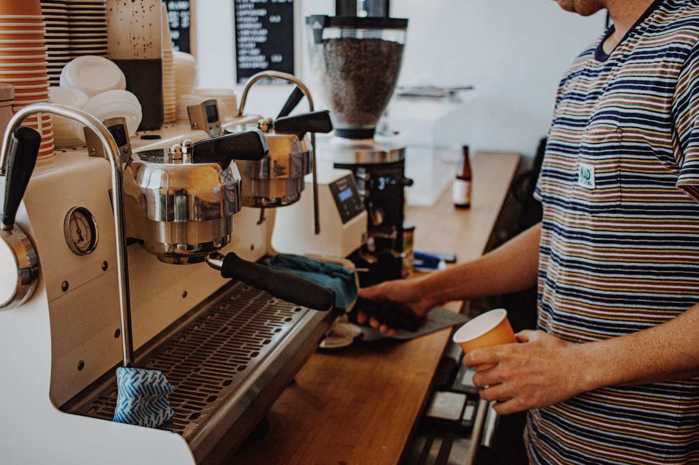
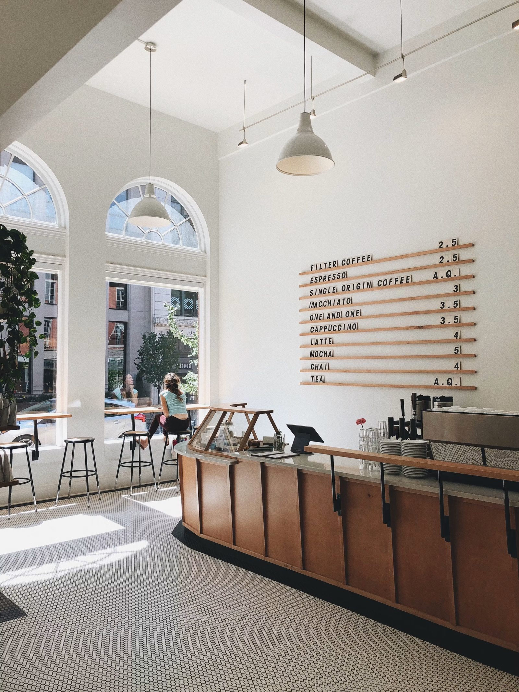

Our story
It started with a Saturday stall and a temperamental oven.


Wren began as a market stall with one table, one oven and a queue that wrapped around the parish hall. Three winters later the queue followed us up the hill to a former ironmonger's on Market Street — arched windows, wonky floors, a door that sticks in August.
We bake in small batches all day rather than one big batch at dawn, because bread that's two hours old is a different food from bread that's two days old. The coffee is roasted forty minutes up the valley by people whose names we know. Nothing about that is efficient, and nothing about it is changing.